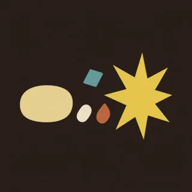

Pieces · handpan piece for D Kurd
Half time
A slow backbeat. Bass on 1, a loud D on 3, soft notes between.

- Kind
- Pieces
- Tempo
- 88 BPM
- Time signature
- 4/4
- Length
- 34 bars, about 93 seconds
- Notes used
- D3, A3, B♭3, C4, D4, E4, F4, G4, A4, C5
- Added
- 2026-10-11
Play in AlamutLearn bar by bar
About this pattern
Count 1 e and a, 2 e and a. The bass lands on 1 and the loud D lands on 3, like a drum kit. Everything else is soft: the low A on the ands, a tak on 2 and 4, a push into the bass. Pulse is that groove with the bass walking ding, C, B-flat, low A. Tune puts a melody in the gaps, and the loud D on 3 is part of it. Lift keeps the ding as the bass and moves the rest up the pan. Learn Pulse first, with the soft notes soft.
Notation
Each line is one bar in 4/4. Numbers are the pan's fields, a dot is a rest, brackets hold notes struck together, and × is a tak on the shoulder. Read the number legend below.
Pulse
0 . 1 . × . 0 3 4 . 1 6 × . 1 03 . 1 . × 2 3 . 4 . 1 6 × . × 02 . 1 . × . 2 3 4 . 1 6 × . 1 01 . 1 . × 2 1 . 4 . 1 6 × . 1 0
Pulse
0 . 1 . × . 0 3 4 . 1 6 × . 1 03 . 1 . × 2 3 . 4 . 1 6 × . × 02 . 1 . × . 2 3 4 . 1 6 × . 1 01 . 1 . × 2 1 . 4 . 1 6 × . 1 0
Tune
0 . . 6 . 5 4 . 4 . 1 . . . 5 .3 . . 5 . 6 7 . 4 . 1 . . . 7 .2 . . 6 . 7 8 . 4 . 1 . 8 . 7 .1 . . 5 . 7 6 . 4 . 1 . . . 3 .0 . . 8 . 9 8 . 4 . 1 . 8 . 7 .3 . . 9 . 8 7 . 4 . 1 . 7 . 5 .2 . . 6 . 7 6 . 4 . 1 . 5 . 4 .1 . . 5 . 3 . . 4 . . . 1 . . .
Lift
0 . 5 . × . 8 7 8 . 5 6 × . 5 00 . 5 . × 6 9 . 8 . 5 6 × . 5 00 . 5 . × . 6 7 8 . 5 6 × . 5 00 . 5 . × 6 5 . 8 . 5 6 × . 5 0
Tune
0 . . 6 . 5 4 . 4 . 1 . . . 5 .3 . . 5 . 6 7 . 4 . 1 . . . 7 .2 . . 6 . 7 8 . 4 . 1 . 8 . 7 .1 . . 5 . 7 6 . 4 . 1 . . . 3 .0 . . 8 . 9 8 . 4 . 1 . 8 . 7 .3 . . 9 . 8 7 . 4 . 1 . 7 . 5 .2 . . 6 . 7 6 . 4 . 1 . 5 . 4 .1 . . 5 . 3 . . 4 . . . 1 . . .
Pulse
0 . 1 . × . 0 3 4 . 1 6 × . 1 03 . 1 . × 2 3 . 4 . 1 6 × . × 02 . 1 . × . 2 3 4 . 1 6 × . 1 01 . 1 . × 2 1 . 4 . 1 6 × . 1 0
Close
0 . 1 . × . 0 3 4 . . . . . . .[04] . . . . . . . . . . . . . . .
Number legend
0D3 (ding), 146.8 Hz1A3, 220.0 Hz2B♭3, 233.1 Hz3C4, 261.6 Hz4D4, 293.7 Hz5E4, 329.6 Hz6F4, 349.2 Hz7G4, 392.0 Hz8A4, 440.0 Hz9C5, 523.3 Hz×tak, a rim or shoulder tap
نیمزمان
پشتضربی آرام. باس روی ۱، یک رِ پرصدا روی ۳، و نتهای نرم میانشان.
هر ضرب را چهار قسمت بشمارید: ۱ اِ و اَ، ۲ اِ و اَ. باس روی ۱ مینشیند و رِ پرصدا روی ۳، مثل یک درامست. باقی همه نرم است: لای بم روی «و»ها، یک تَک روی ۲ و ۴، و ضربهای که به باس میرسد. «نبض» همین ریتم است، با باسی که از دینگ به دو، سیبمل و لای بم میرود. «آهنگ» ملودیای در فاصلهها میگذارد و رِ پرصدا روی ۳ هم جزئی از آن است. «اوجگیری» دینگ را باس نگه میدارد و بقیه را به بالای ساز میبرد. اول «نبض» را یاد بگیرید و نتهای نرم را واقعاً نرم بزنید.
More Pieces
Original pieces with named sections, written for this instrument.